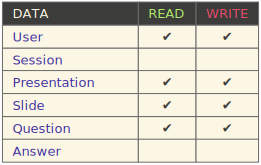

Previously on ASQ...
- v0.1 Developed by Jacques Dafflon, Margarita Grinvald, Max von Bülow
- Supported features
- Adminstrator view
- Upload presentation in a zip format
- Edit presentation code
- Multiple Clients
- Anonymous login
- 1 question per slide
- Multiple-choice questions
- Simple statistics per question
Meet the team
- Vassilis Triglianos
- Project Manager
- Lead Developer
- Jacques Dafflon
- Core Developer
- webSockets, file parsing, etc.
- Max von Bülow
- Bachelor Thesis on ASQ
- Mobile UX and implementation
- Statistics and Question Types
- Evaluation
- Giorgos Kokosioulis
- impress.js editor eveloper
- Integrate with ASQ
Workflow
- Features on Trello
- weekly team meetings every Monday
- "ASQ" skype chatroom
- One GitHub repo
- Use GitHub workflow
git
- Git is your friend :-) Commit frequently!
git push -fshould be avoided as much as possible- Learn what a rebase is and why we use it here
- Common git scenarios
- try github
Github Workflow
- Master branch always deployable
- Feature branches with descriptive names
- When you need feedback or help, or you think the branch is ready for merging, open a pull request
- After someone else (usually Vassilis or Jacques) has reviewed and signed off on the feature, you can merge it into master
- Once it is merged and pushed to ‘master’, you can and should deploy immediately
- Read the article here
Cool Tools and Services
- git
- github
- jsdoc
- mocha
- should.js
- trello
- learn how to use them!
Javascript stuff
- Make your tests deterministic guide
- presentation and resources
- Learning JavaScript Design Patterns
- Understanding exports in node.js
- Try jQuery
- Ask me if you have any javascript questions :-)
CSS stuff
- We use LESS
- both LESS and compiled CSS files on Github repo
- compile with less script or {less}.app
- Understanding exports in node.js
- Ask me if you have any javascript questions :-)
Back to business!

Our vision for ASQ
- Full featured bi-directional presentation tool
- Ease of use for novice to expert users
- Minimum requirements: Internet connectivity, HTML5 capable browser
- CRUD presentations easily, more than one ways to do so
- Enhance learning experience
- Multiple types of questions and feedback
- automatic-assessment, teacher-assessment, eer-assessment, self-assessment
- Data mining on feedback - Statistics
- Adopt to student's needs with Machine learning
- Read the paper on ASQ please:)
Features
- Full feature list on Trello - Suggest something!
- Use member tags for cards
Let's jump in from high above!
1000 Feet
100 Feet
-
How does an answer fit into the data model?
-
What does an answer log look like?
1Foot
-
What data are affected at design time and how?
- 
-
What data are affected at presentation time and how?
-
What about statistics?
-
Statisticsare just logical operations on the logs
Thank you
Vassilis Triglianos
Use a spacebar or arrow keys to navigate